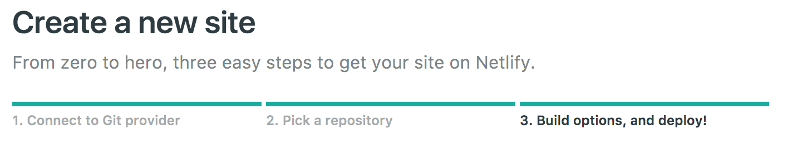
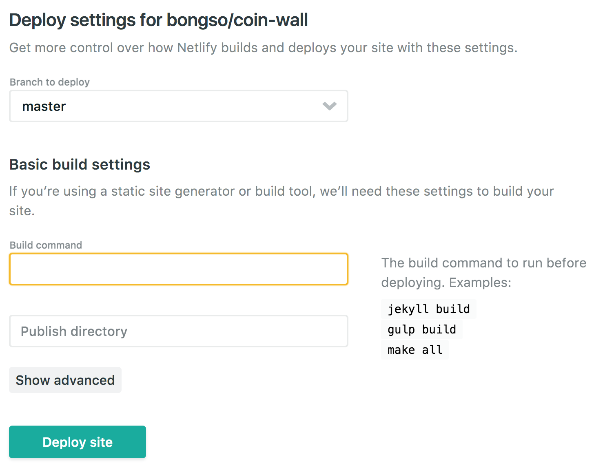

Netlify 는 스태틱 웹을 위한 CMS다. Git 서비스들을 통해 제공되며 레포지터리에 푸시를 할 경우 이를 자동으로 감지하고 빌드하며 재 배포한다. 여기에 본인이 도메인을 가진게 있다라면 본인의 도메인을 연결하여 서비스 할 수 있다.
스태틱웹은 동적으로 URL을 생성하는 것이 아닌 그냥 실제 html파일 자체로 서빙을 한다고 생각하면 단순하다.
Netlify 는 추가적으로 Let’s encrypt 를 서비스 안으로 포함시켜서 SSL(https://) 을 지원하며 이를 위해 DNS를 품고 있다. 자동으로 지원되지만 자신만의 도메인이 있어 이를 사용할 때는 Netlify DNS를 사용해야한다.
이번 <bglee.me>의 DNS를 Netlify 로 옮기면서 모든 페이지에 SSL을 적용하고 기존 블로그는 https://deptno.github.io로 되돌려 하나의 루트로 접근 경로를 통일했으며 기존 https://blog.bglee.me는 이제 SSL을 적용하고 기존 패스 그대로 https://deptno.github.io로 리다이렉트 시키도록 세팅했다. 이를 세팅 과정은 로컬 환경이 아닌 깃헙 레포지터리를 이용할 정도로 단순했고 Netlify 에서 지원하는 리다이렉트 옵션도 매우 직관적이었다.1
배포
글을 작성하고 있는 현재 Netlify 에서 지원하고 있는 Git 클라우드 서비스는 아래와 같다.
- Gitub
- Gitlab
- Bitbucket
잠깐 부연하자면 비공개 레포지터리를 만들기 위해서 Github은 유로 플랜을 써야하지만 나머지 둘은 기본적으로 비공개 레포지터리를 개인에게 무료로 허용한다.
로그인하면 바로 사용을 위한 화면이 시작되며 순서는 아래와 같다.

- 사용하고 있는 레포지터리 서비스를 선택한다.(Git 클라우드 서비스들)
- 배포에 사용될 레포지터리를 선택한다.
- 배포에 사용될 브랜치, 빌드시 명령어, 그리고 빌드 명령어를 통해 생성된 배포될 파일들을 가리키는 디렉토리를 작성한다.

그럼 바로 배포가 시작되며 앞으로 레포지터리에 푸시를 할 때마다 자동으로 빌드 => 배포가 진행된다.
커스텀 도메인과 DNS
커스텀 도메인을 을 사용하기 위해서는 domain settings에 들어가서 custom domain을 누르고 본인의 도메인을 입력해야한다. 도메인 셋업은 www.YOUR_DOMAIN을 통해야 SSL서비스를 받을 수 있다.
예를 들어 필자는 www.bglee.me를 입력하고 HTTPS 에서 주소를 확인한뒤에 Force TLS connections를 활성화 시켜 http접속을 https로 강제 리다이렉트 시켰다.
Netflify 에서는 bglee.me가 아닌 www.bglee.me를 등록하라고 권고하고 있으며 www.bglee.me를 등록시에 bglee.me도 자동으로 Netlify에 의해 등록되며 <bglee.me> 접속시 <www.bglee.me>로 강제 리다이렉트된다.
추가적인 기능
와… 한 기능들을 몇개 지원한다.
브랜치를 통한 A/B 테스트 지원
브랜치를 추가적으로 등록할 수 있는데(A/B테스트 메뉴) 자동으로 로드밸런싱을 해서 A/B테스트를 하게 해준다.
PR시, 스테이지 URL
PR이 왔을시 이에대한 Preview URL을 생성할 수 있으며 이를 스테이지로 활용할 수 있다.
next
이제 스태틱 사이트를 작성하고 배포해보자.